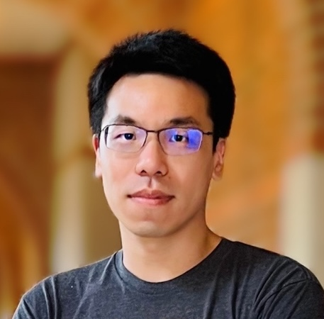

I am currently a Member of Technical Staff at OpenAI. Before that I was a Machine Learning Engineer at Tesla Autopilot, contributing to FSD V12, V13, V14 as well as the Robotaxi launch in Austin. Before joining Tesla, I was a Research Scientist and Manager at Waymo, leading a team to build the perception foundation models.
In 2018-2019, I was a Postdoctoral Researcher at Facebook AI Research (FAIR), working with Kaiming He, Saining Xie and Xinlei Chen on 3D perception projects including VoteNet, ImVoteNet and PointContrast. Before that, I spent five years at Stanford University earning my Ph.D. at Stanford AI Lab and the Geometric Computation Group, advised by Professor Leonidas J. Guibas. Our work helped start 3D deep learning through PointNet, PointNet++ and Multi-View/Volumetric CNNs, with applications in 3D scene understanding, detection, segmentation, scene flow and shape synthesis. Prior to Stanford, I received my B.Eng. from Tsinghua University.
You can follow me on X (@charles_rqi) for more updates.